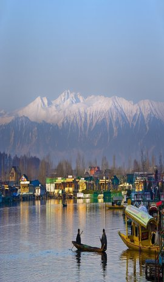
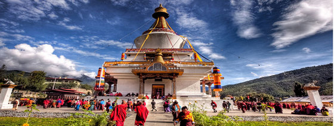
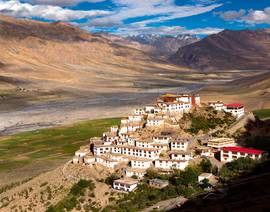
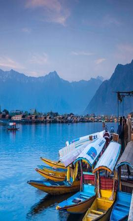

<section class="ga-popular-destination-section">
  <div class="container">
    <div class="row">
      <div class="col-sm ga-upcomig-events">
        <h1 class="ga-title-h1">Popular Destinations</h1>
      </div>
    </div>

    <div class="row">
      <div class="col">
        <div class="row">
          <div class="col-3">
            <div class="ga-image-over-grid-hover animated fadeInLeft delay-2s">
              <figure class="ga-image-over-effect">
                
                <figcaption>
                  <p>This summer choose Mountains over Beaches</p>
                  <h2><span> Buran Ghati </span>trek</h2>
                </figcaption>
              </figure>
            </div>
          </div>

          <div class="col-6">
            <div class="row">
                <div class="col-12">
                  <div class="ga-image-over-grid-hover animated zoomIn delay-2s">
                    <figure class="ga-image-over-effect">
                      
                      <figcaption>
                        <p>This summer choose Mountains over Beaches</p>
                        <h2><span> Buran Ghati </span>trek</h2>
                      </figcaption>
                    </figure>
                  </div>
                </div>
                <div class="col-6">
                  <div class="ga-image-over-grid-hover animated zoomIn delay-2s">
                    <figure class="ga-image-over-effect">
                      
                      <figcaption>
                        <p>This summer choose Mountains over Beaches</p>
                        <h2><span> Buran Ghati </span>trek</h2>
                      </figcaption>
                    </figure>
                  </div>
                </div>
                <div class="col-6">
                  <div class="ga-image-over-grid-hover animated zoomIn delay-2s">
                    <figure class="ga-image-over-effect">
                      
                      <figcaption>
                        <p>This summer choose Mountains over Beaches</p>
                        <h2><span> Buran Ghati </span>trek</h2>
                      </figcaption>
                    </figure>
                  </div>
                </div>
            </div>
          </div>

          <div class="col-3">
            <div class="ga-image-over-grid-hover animated fadeInRight delay-2s">
              <figure class="ga-image-over-effect">
                
                <figcaption>
                  <p>This summer choose Mountains over Beaches</p>
                  <h2><span> Buran Ghati </span>trek</h2>
                </figcaption>
              </figure>
            </div>
          </div>
        </div>
      </div>
    </div>
  </div>
</section>


<style>
.ga-popular-destination-section .ga-image-over-grid-hover figure {
      position: relative;
      overflow: hidden;
      margin: 10px 1%;
      width: fit-content;
      text-align: center;
      cursor: pointer
    }
.ga-popular-destination-section .ga-image-over-grid-hover figure img {
        position: relative;
        display: block;
        min-height: 100%;
        max-width: 100%;
        opacity: .8
      }
.ga-popular-destination-section .ga-image-over-grid-hover figure figcaption {
        padding: 1em;
        color: #fff;
        text-transform: uppercase;
        font-size: 1.25em;
        -webkit-backface-visibility: hidden;
        backface-visibility: hidden;
        position: absolute;
        top: 0;
        left: 0;
        width: 100%;
        height: 100%
      }
.ga-popular-destination-section .ga-image-over-grid-hover figure figcaption::after,
.ga-image-over-grid-hover figure figcaption::before {
          pointer-events: none
        }
.ga-popular-destination-section .ga-image-over-grid-hover figure figcaption > a {
          position: absolute;
          top: 0;
          left: 0;
          width: 100%;
          height: 100%;
          z-index: 1000;
          text-indent: 200%;
          white-space: nowrap;
          font-size: 0;
          opacity: 0
        }
.ga-popular-destination-section .ga-image-over-grid-hover figure h2 {
        font-weight: 300;
        margin: 0;
        position: absolute;
        bottom: 30px;
        font-size: 23px;
        right: 30px;
      }
.ga-popular-destination-section .ga-image-over-grid-hover figure h2 span {
          font-weight: 800
        }
.ga-popular-destination-section .ga-image-over-grid-hover figure p {
        margin: 0;
        letter-spacing: 1px;
        font-size: 68.5%;
        text-align: left;
        background: #00000057;
        padding: 10px;
      }
.ga-popular-destination-section figure.ga-image-over-effect img {
    opacity: .7;
    transition: opacity .35s,-webkit-transform .35s;
    transition: opacity .35s,transform .35s;
    transition: opacity .35s,transform .35s,-webkit-transform .35s;
  }
.ga-popular-destination-section figure.ga-image-over-effect figcaption {
    text-align: left
  }
.ga-popular-destination-section figure.ga-image-over-effect h2 {
    transition: -webkit-transform .35s;
    transition: transform .35s;
    transition: transform .35s,-webkit-transform .35s
  }
.ga-popular-destination-section figure.ga-image-over-effect p {
    -webkit-transform: translate3d(0,40px,0);
    transform: translate3d(0,40px,0);
    color: #fff;
    opacity: 0;
    transition: opacity .2s,-webkit-transform .35s;
    transition: opacity .2s,transform .35s;
    transition: opacity .2s,transform .35s,-webkit-transform .35s
  }
.ga-popular-destination-section figure.ga-image-over-effect:hover img {
    opacity: 1;
    -webkit-transform: translate3d(0,0,0);
    transform: translate3d(0,0,0)
  }
.ga-popular-destination-section figure.ga-image-over-effect:hover p {
    opacity: 1;
    -webkit-transform: translate3d(0,0,0);
    transform: translate3d(0,0,0);
    transition-delay: 50ms;
    transition-duration: .35s
  }
.ga-popular-destination-section figure.ga-image-over-effect:hover h2 {
    -webkit-transform: translate3d(0,0,0);
    transform: translate3d(0,0,0)
  }
  </style>